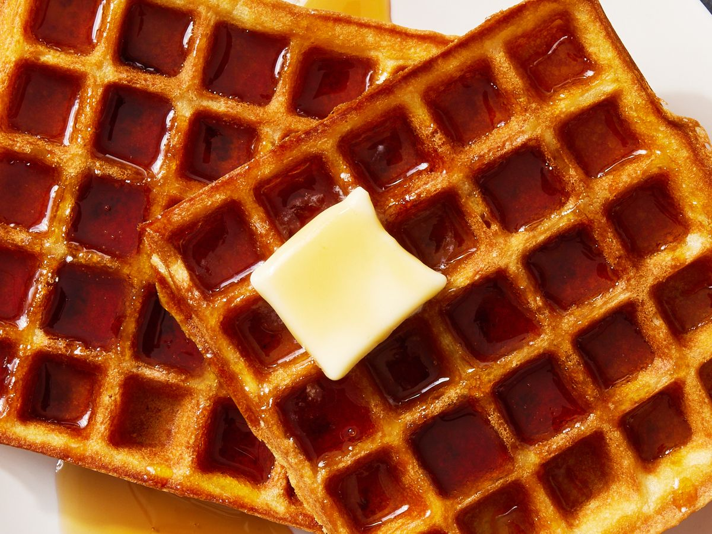

Waffle

Description
A homemade waffle recipe using a waffle iron.
Ingredients
- waffle mix
- spray oil
- water
Steps
- Pre-heat waffle iron.
- Add water to waffle mix until yogurt-like consistency.
- Add appropriate amount of mixture to waffle iron.
- Close waffle iron and wait for steam.
- Wait until steam stops and remove waffle.
- Enjoy!